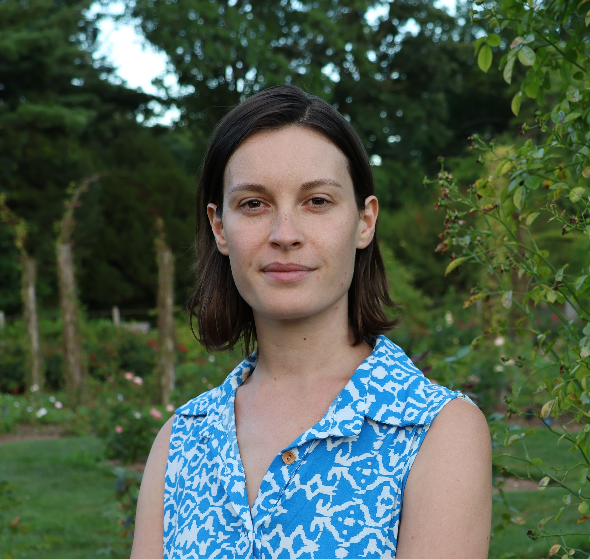
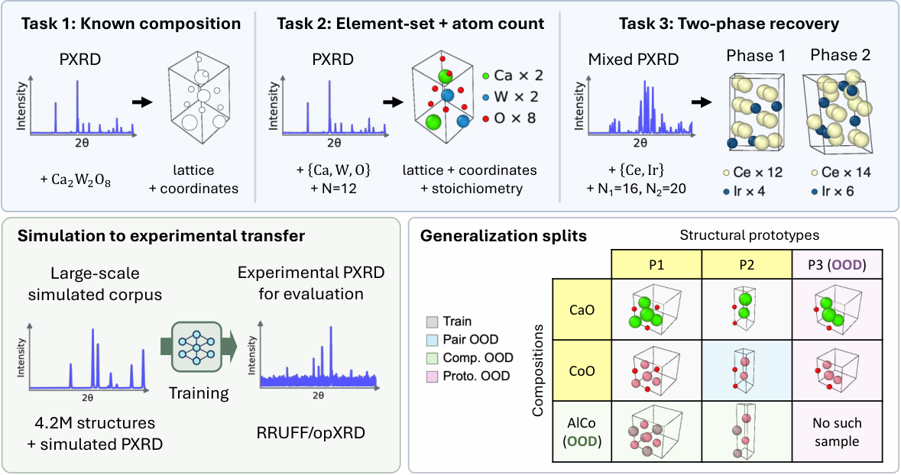
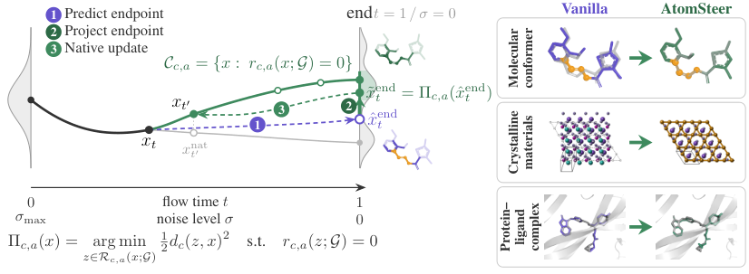
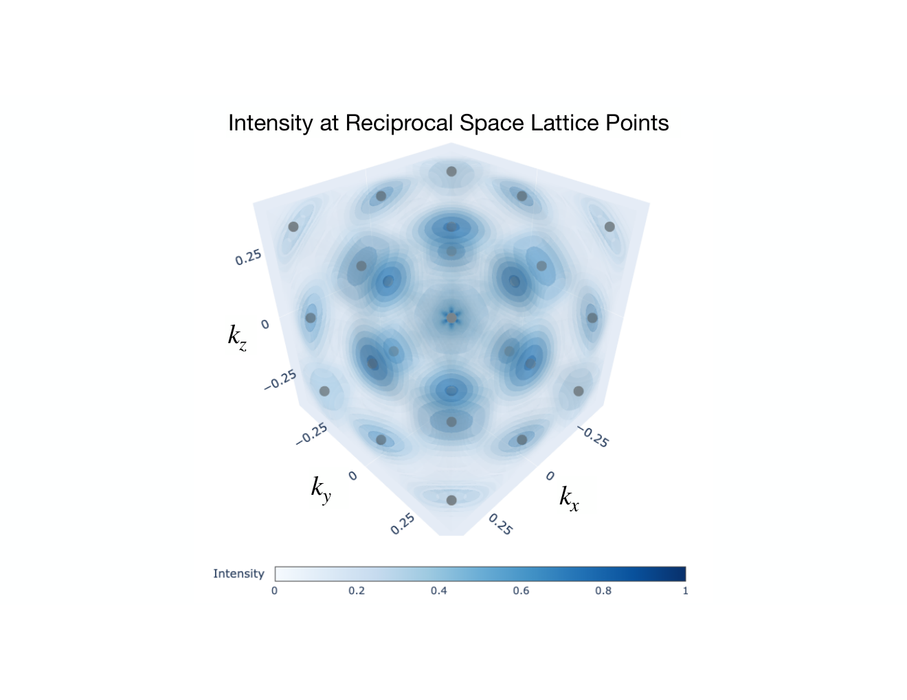
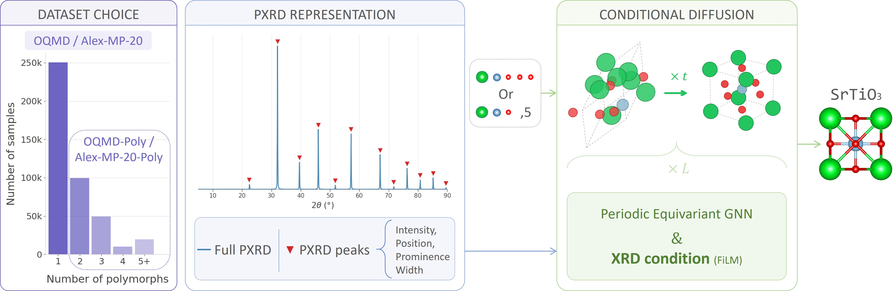
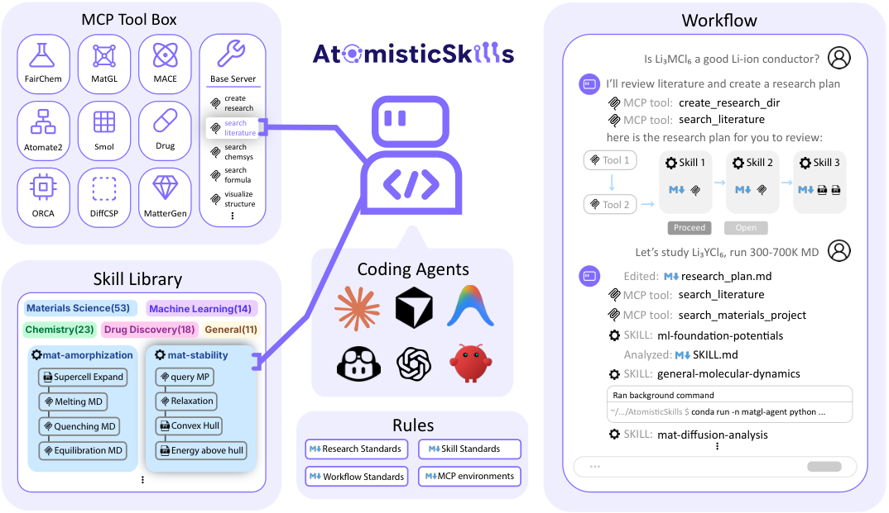
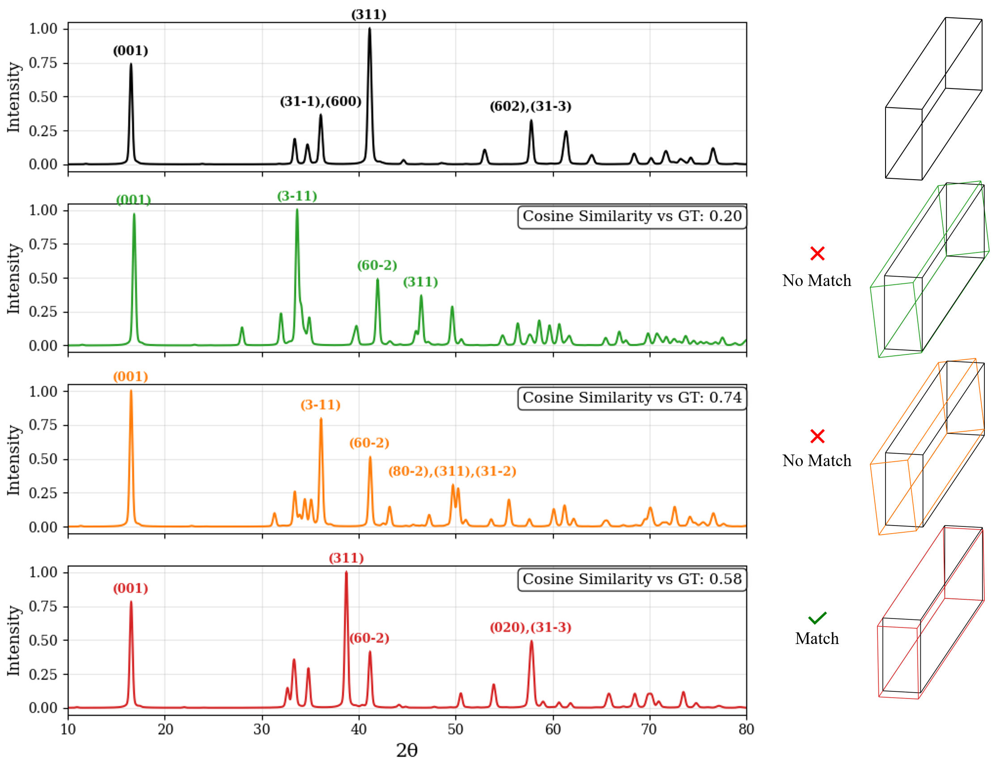
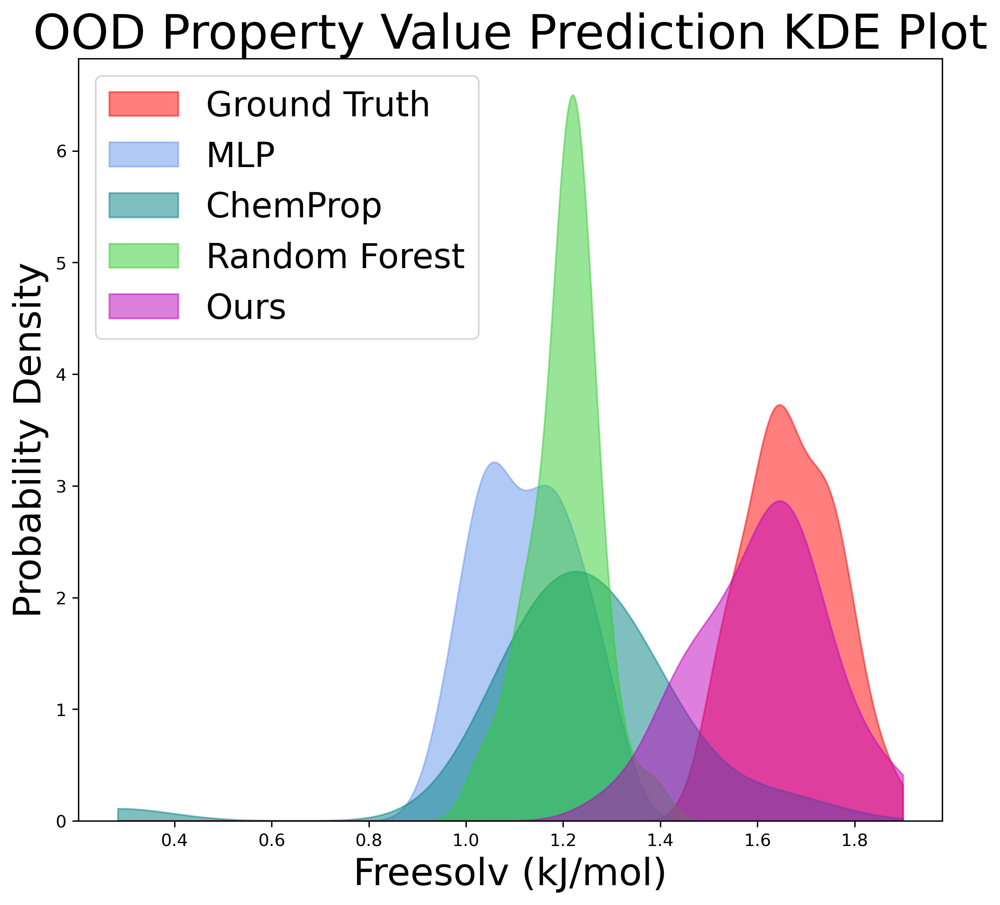
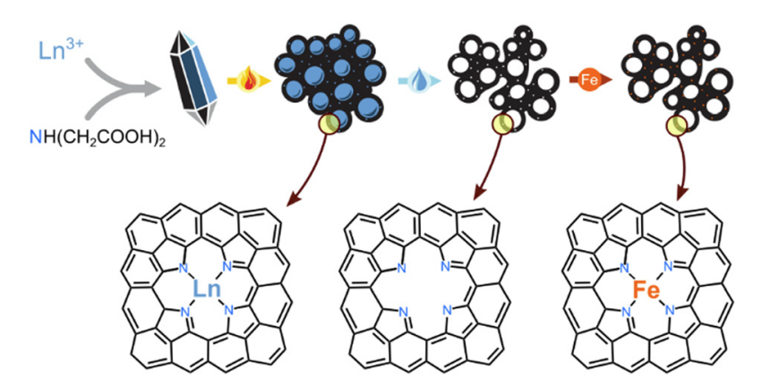
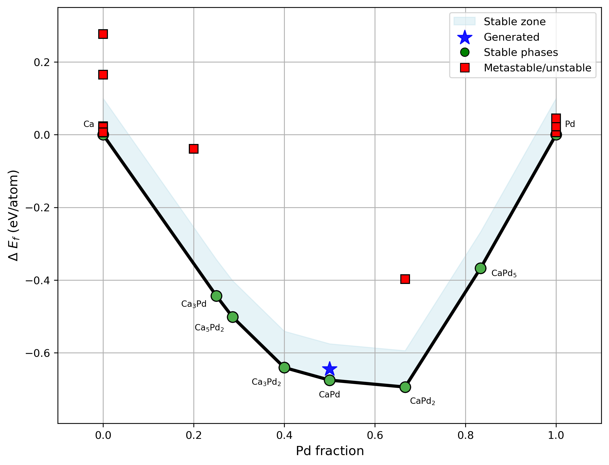

|
Nofit Segal
I am a PhD student in the joint program of the Department of Materials Science and Engineering (DMSE) and the Center for Computational Science and Engineering (CSE) at MIT, advised by Prof. Rafael Gomez-Bombarelli.
I am passionate about developing practical machine-learning tools for materials inverse design, spanning both predictive and generative approaches.
My current research focuses on predicting crystal structures from spectroscopic data and designing representation-learning models whose algorithmic structure supports stronger out-of-distribution generalization for materials.
I received my B.Sc. in Materials Science and Engineering from the Technion - Israel Institute of Technology, supported by the Technion Rothschild Excellence Fellowship.
Email /
Google Scholar /
LinkedIn /
Github
|

|
News
- Two workshop papers accepted to the RPS Workshop at NeurIPS 2026, one as a Spotlight Talk. (2026)
- Our work on learning lattice parameters from powder XRD using invariants has been accepted to Acta Crystallographica Section A. (2026)
- Our work on probing the crystal structure–diffraction mapping through a gradient-descent lens has been accepted to Digital Discovery. (2026)
- Our work on probing the crystal structure–diffraction mapping through a gradient-descent lens has been accepted as an Oral Presentation to AI4Mat at NeurIPS 2025. (October 2025)
- Our work on using reinforcement learning with energy-based rewards for stable materials generation has been accepted to AI4Science at NeurIPS 2025. (October 2025)
- Our work on out-of-distribution property prediction for materials and molecules has been accepted to npj Computational Materials. (September 2025)
|
Publications
|

|
PXRD-Bench: How Close Are We to Determining Crystal Structures from Powder Diffraction?
Dongyeop Woo,
Nofit Segal,
Nayoung Kim,
Minkyu Kim,
Rafael Gomez-Bombarelli,
Sungsoo Ahn
Under review, 2026
paper
|
|

|
AtomSteer: Test-Time Constraint Steering for Atomistic Generative Models
Pengfei Cai*,
Katharina Jäger*,
Utkarsh Utkarsh,
Nofit Segal,
Bowen Deng,
Akshay Subramanian,
Rafael Gomez-Bombarelli
Under review, 2026
paper
|
|

|
Learning Lattice Parameters from Powder X-Ray Diffraction Data Using Invariants
Elyssa Hofgard,
Kyucheol Min,
Nofit Segal,
David W. Mittan-Moreau,
Aria Mansouri Tehrani,
Vanessa Oklejas,
Rafael Gomez-Bombarelli,
Jigyasa Nigam,
Daniel W. Paley,
Aaron S. Brewster,
Tess Smidt
Acta Crystallographica Section A 2026
paper
|
|

|
XRDiff: Crystal Structure Prediction from Powder X-Ray Diffraction Data Using Diffusion Models
Nofit Segal,
Akshay Subramanian,
Mingda Li,
Benjamin Kurt Miller,
Rafael Gomez-Bombarelli
npj Computational Materials 2026 (in revision)
paper
|
|

|
Harnessing AtomisticSkills for Agentic Atomistic Research
Bowen Deng, Bohan Li, Matthew Cox, Hoje Chun, Juno Nam, Artur Lyssenko, Sathya Edamadaka, Jurgis Ruza, Xiaochen Du,
Nofit Segal,
Jesus Diaz Sanchez, Mingrou Xie, Ty Perez, Yu Yao, Miguel Steiner, Sauradeep Majumdar, Charles B. Musgrave III, Anirban Chandra, Abhirup Patra, Detlef Hohl, Connor W. Coley, Ju Li, Rafael Gomez-Bombarelli
Nature Machine Intelligence 2026 (in revision)
paper
Developed the PXRD analysis skills.
|
|

|
The Loss Landscape of Powder X-Ray Diffraction-Based Structure Optimization Is Too Rough for Gradient Descent
Nofit Segal,
Akshay Subramanian,
Mingda Li,
Benjamin Kurt Miller,
Rafael Gomez-Bombarelli
Digital Discovery 2026
AI for Accelerated Materials Design (AI4Mat), NeurIPS 2025 Oral Presentation
paper /
code
|
|

|
Known Unknowns: Out-of-Distribution Property Prediction in Materials and Molecules
Nofit Segal*,
Aviv Netanyahu*,
Kevin Greenman,
Pulkit Agrawal,
Rafael Gomez-Bombarelli
npj Computational Materials 2025
AI for Accelerated Materials Design (AI4Mat), NeurIPS 2024 Spotlight Talk
Next-Generation AI-Catalyzed Scientific Workflow for Digital Materials Discovery Symposium, MRS Fall 2024
paper /
code
|
|

|
Lanthanoid Coordination Compounds as Diverse Self-templating Agents towards Hierarchically Porous Fe–N–C Electrocatalysts
Itamar Salton,
Karina Ioffe,
Tomer Y. Burshtein,
Eliyahu M. Farber,
Nicola M. Seraphim,
Nofit Segal,
David Eisenberg
Materials Advances 2022
paper
|
|
Workshop Papers
|
|
MLIP Embeddings Predict Extraordinary Materials
Luis Carretero López,
Nofit Segal,
Sathya Edamadaka,
Rafael Gomez-Bombarelli
Representations for the Physical Sciences (RPS), NeurIPS 2026 Spotlight Talk
|
|
|
Self-Supervised Pretraining for Instrument-Robust Representations of Scattering Data
Darin Merchant,
Nofit Segal,
Miguel Steiner,
Rafael Gomez-Bombarelli
Representations for the Physical Sciences (RPS), NeurIPS 2026
|
|

|
Towards Generating Stable Materials via Large Language Models with Reinforcement Learning Finetuning
Zhang-Wei Hong*,
Nofit Segal*,
Aviv Netanyahu,
Hoje Chun,
Rafael Gomez-Bombarelli,
Pulkit Agrawal
The Reach and Limits of AI for Scientific Discovery (AI4Science), NeurIPS 2025
paper
|
* Indicates equal contribution
|
|